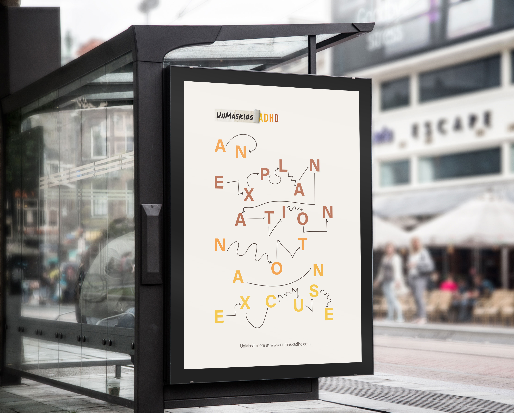
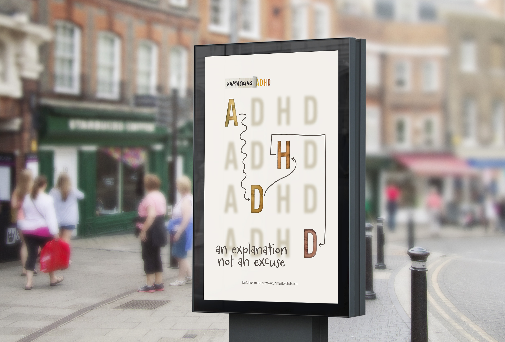
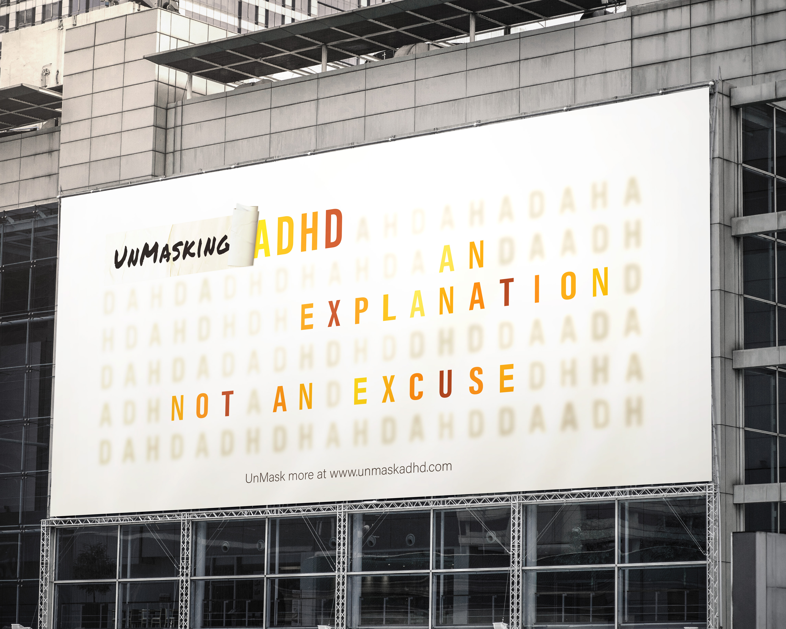
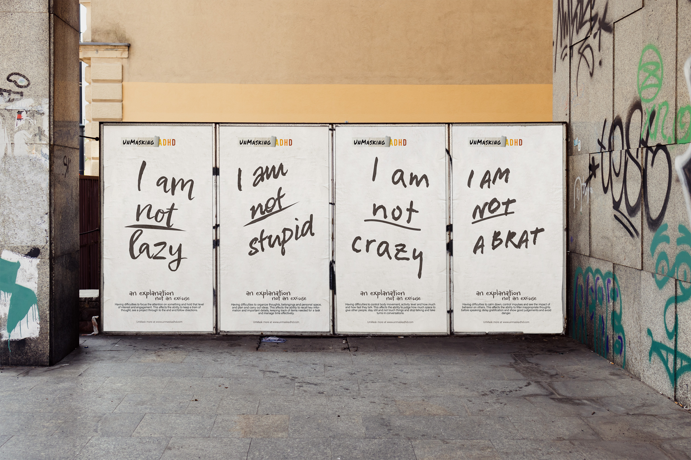

Visual Communication
awareness Campaign - Unmasking ADHD
← ProjectsThis project explores a visual identity and brand touchpoints for a public awareness campaign about ADHD. The campaign aims to challenge stereotypes and communicate the complexity of the condition through design.





The brief required the creation of a logo and supporting brand materials for a self-initiated awareness campaign. I chose ADHD as the focus,
designing a visual identity that both educates and engages.
A key design challenge was representing the hidden aspects of ADHD and the experience of masking—how individuals adapt to societal
expectations, often at the cost of self-confidence. The branding needed to create a safe and inclusive space, visually communicating
acceptance rather than shame.
The visual approach balances clarity and personality. I explored typography, color, and graphic motifs that convey energy, complexity,
and openness. The identity is flexible, adaptable across digital and physical touchpoints, while maintaining a cohesive and recognisable look.
The campaign targets older teenagers and young adults (16–30), a group navigating education, work, and self-identity. Design decisions
— from logo proportions to colour palette and layout—were guided by how the audience perceives clarity, trust, and approachability.
At the same time, the branding is open enough to resonate with a wider audience, creating an inclusive visual language.